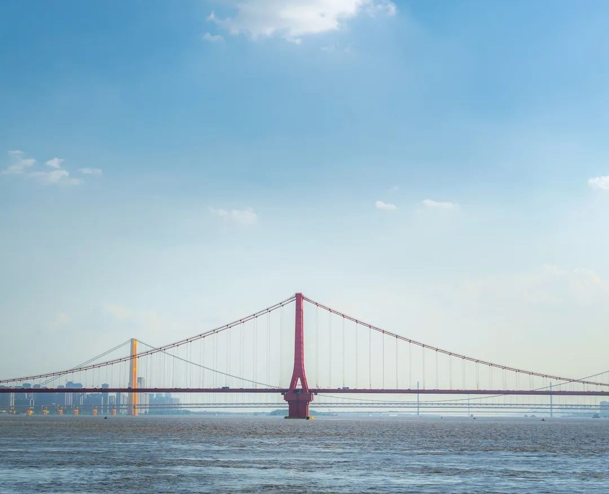

琴台
琴台文化艺术中心东至江汉一桥，西至月湖桥，南至琴台路，北至月湖大道，共计2.15平方公里，景区建设面积就达50多万平方米，是江城最大的文化主题公园，面积超过5个洪山广场之和。傍汉江、枕月湖、背靠梅子山，这里被誉为“武汉最美的客厅”

长江大桥
武汉长江大桥（Wuhan Yangtze River Bridge），是中国湖北省武汉市境内连接汉阳区与武昌区的过江通道，位于长江水道之上，是中华人民共和国成立后修建的第一座公铁两用的长江大桥，也是武汉市重要的历史标志性建筑之一，素有“万里长江第一桥”美誉。